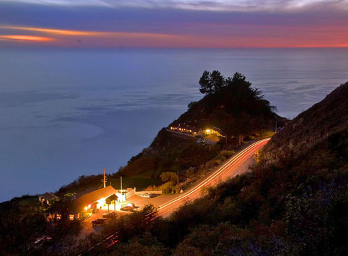
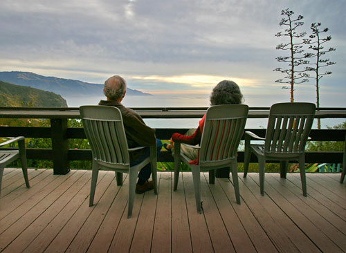

About Us
About Lucia Lodge
Lucia Lodge is an historic cliff-side resort located in the heart of the Big Sur coast. Lucia is perched on the coast, miles from any other business, and boasts some of the best ocean views on the coast. Locals have frequented Lucia Lodge for mail, groceries, WiFi, and complimentary coffee for decades.
The Lucia store opened in 1937, coinciding with the opening of Highway 1. The land was originally homesteaded in the 1800s by the Harlan family, and in that same pioneering spirit the Harlans plan to rebuild this vital part of the Big Sur South Coast.
We provide a free grab-n-go breakfast each morning. Dining is also available 25 miles north.


Where We Are
On Highway 1, in the Village of Lucia
Lucia Lodge is located directly adjacent to Highway 1 in the village of Lucia — 50 miles south of Carmel, California, and 40 miles north of San Simeon and Cambria, home to Hearst Castle. You can reserve one of the cliff-side cabins or ocean view rooms, stop in just for lunch or dinner, or visit the store and gift shop.

Closer to the Ocean
300 Feet Above the Pacific
Lucia Lodge is famous for its close proximity to the ocean — no other Big Sur resort gets you this close to the sea. The cabins are situated along a southwest-facing cliff, 300 feet above the Pacific Ocean, offering an unparalleled view of the Big Sur coast and the rugged Santa Lucia Mountains. A large deck adjoins the restaurant, where guests once watched whales along their migration path while dining fireside.

A Launching Point
Everything from a 10-Minute Walk to an Hour's Drive
Lucia's location is a perfect launching point for exploring the rest of Big Sur. Check out the activities and links on this site to familiarize yourself with the local wildlife, locate great day hikes and nearby beaches, or find fun places to visit — all within 10 minutes on foot to an hour's reach by car.
Getting Here
Distances at a Glance
From the North
- Big Sur Valley 22 mi
- Monterey / Carmel 48 mi
- San Jose / Silicon Valley 110 mi
- San Francisco 180 mi
From the South
- Hearst Castle 38 mi
- Cambria 50 mi
- Morro Bay 70 mi
- San Luis Obispo 85 mi
- Santa Barbara 180 mi
Reserve Your Stay
Come See It for Yourself
Stay above the Pacific, explore the south coast, and enjoy the quiet character of Lucia Lodge.